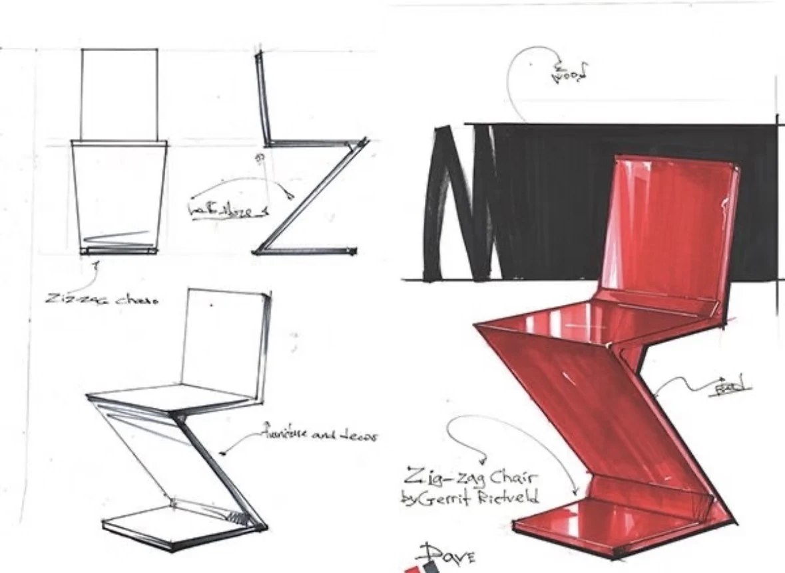
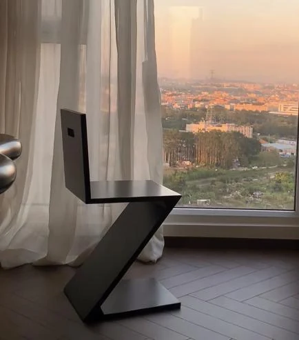
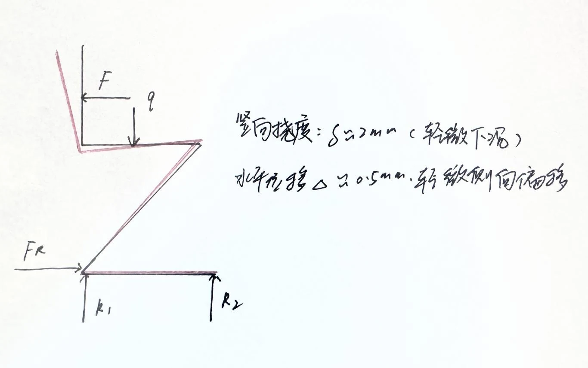

大连交通大学 · 智能建造23
我的原作Z形闪电椅的力学现象与设计理念解析——基于材料力学与结构设计原理
王海旭

（设计图来自网络）
1. 力学意义
Z 形闪电椅以独特的连续 Z 形曲面为核心结构，其力学设计的核心意义在于通过形态优化实现 “承重 - 传力 - 抗变形” 的统一。作为坐具类构件，它需同时承受人体竖向压力、坐姿变化产生的水平侧向力及局部集中荷载，且需控制变形在允许范围内（满足使用舒适度与结构耐久性），是材料力学中 “构件承载能力” 与结构设计原理 “形式追随力学” 的典型应用载体。
2. 影响因素
材料特性：主体材料的弹性模量（E）、抗拉 / 压强度（f_y/f_c）直接决定承载极限，如木质椅需考虑顺纹 / 横纹强度差异，金属椅需兼顾刚度与韧性。
截面几何参数：Z 形曲面的曲率半径、截面高度、壁厚，影响截面惯性矩（I）和抵抗矩（W），进而决定抗弯、抗扭能力。
荷载条件：人体体重、坐姿偏移产生的偏心荷载、突发冲击荷载，会改变受力形式。
支撑条件：底部与地面的接触方式影响约束刚度，直接关联整体稳定性。
3. 力学趋势
Z 形结构的力学响应呈现 “荷载路径连续化、应力分布均匀化” 趋势：竖向压力通过 Z 形曲面的转折，沿构件轴线向地面传递，避免局部应力集中；侧向力作用下，曲面的抗侧刚度与材料的剪切变形协同，形成 “抗弯 - 抗剪” 耦合承载机制，最终使构件变形趋于平缓，满足正常使用极限状态要求。
4. 配文说明（图片本人拍摄）

Z 形闪电椅在生活中的受力与变形完全契合力学分析结论：当我们坐在椅子上时（竖向荷载 q 作用），坐面中段会出现轻微下沉（竖向挠度 δ），这是因为该区域承受了主要弯矩，材料发生弯曲变形；当身体向一侧倾斜时（水平侧向力 F 作用），坐面会有微弱的侧向偏移（水平位移 Δ），但不会倾倒，这得益于底部水平反力 F_R 的平衡作用与 Z 形曲面的抗侧刚度。值得注意的是，椅子的 Z 形转折处没有出现明显变形或异响，说明该形态优化了应力分布，避免了局部集中 —— 这与我们用海绵模拟抗弯构件应变分布的原理一致：海绵梁弯曲时应变沿截面线性分布，而 Z 形椅的曲面形态恰好让应力沿构件长度线性传递，如同 “连续的应变过渡带”。同时，金属材料的高弹性模量保证了变形后能恢复原状，符合 “弹性变形” 的使用要求，这和饮料瓶盖的抗扭设计异曲同工：瓶盖通过螺纹的抗扭刚度传递扭矩，Z 形椅则通过曲面的抗弯刚度传递荷载，均是 “形态适配力学功能” 的生活体现。
受力分析如图：

Z 形闪电椅的 “形态优化” 本质是《结构设计原理》中 “结构效率最大化” 理念的体现：通过 Z 形曲面减少无效截面尺寸，在保证承载能力的前提下降低自重（如金属椅的薄壁 Z 形截面）；同时，连续的曲面形态使荷载路径最短，避免了折线形结构的应力集中问题，符合 “传力路径越短，结构效率越高” 的设计原则。这与结构设计中 “梁的受弯优化” 思路一致 —— 通过调整截面形态，让材料集中在受力关键区域，实现 “材料用量最少、承载能力最强” 的目标。
这是一份便于网页阅读的原作视图，保留提交内容的文字、图片和基本顺序；公开页面不显示学号。